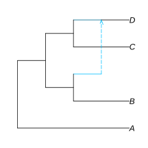

Getting started
To demonstrate, we will plot the simple network: (A,((B,#H1),(C,(D)#H1)));
To start plotting, use the packages:
julia> using PhyloNetworksjulia> using PhyloPlots
Then read the topology
julia> net = readTopology("(A,((B,#H1),(C,(D)#H1)));")HybridNetwork, Rooted Network 9 edges 9 nodes: 4 tips, 1 hybrid nodes, 4 internal tree nodes. tip labels: A, B, C, D (A,((B,#H1),(C,(D)#H1)));
and call plot, using :R for full funtionality:
One is made using Gadfly (plot(net)), the other using RCall (plot(net, :R)). Since only the RCall version supports the option style=:fulltree for the same style used by icytree, we will only use RCall.
For the function's full documentation, see here: plot
This will draw the following plot.
plot(net, :R);